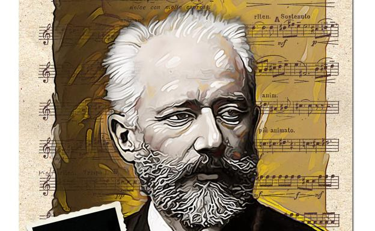

Su fecunda obra es considerada la cima de la música barroca; destaca en ella su profundidad intelectual, su perfección técnica y su belleza artística, además de la síntesis de los diversos estilos nacionales de su época y del pasado. Bach es considerado el último gran maestro del arte del contrapunto y fuente de inspiración e influencia para posteriores compositores y músicos, tales como Joseph Haydn, Wolfgang Amadeus Mozart, Ludwig van Beethoven, Felix Mendelssohn, Robert Schumann y Frédéric Chopin, entre muchos otros. Entre sus obras más conocidas se encuentran los Conciertos de Brandeburgo, El clave bien temperado, la Misa en si menor, la Pequeña fuga en sol menor, la Pasión según San Mateo, El arte de la fuga, Ofrenda musical, las Variaciones Goldberg, la Tocata y fuga en re menor, varios ciclos de cantatas (entre ellas las célebres Wachet auf, ruft uns die Stimme, BWV 140 y Herz und Mund und Tat und Leben, BWV 147), el Concierto italiano, BWV 971, la Obertura en estilo francés, BWV 831, las Suites para violonchelo solo, las Sonatas y partitas para violín solo, los Conciertos para teclado y las Suites para orquesta.
Nacido en una familia de clase media, Chaikovski fue el segundo hijo de lliá Petróvich Chaikovski, su padre era director de una fábrica minera, sus padres eran aficionados a la música, la formación que recibió Chaikovski estaba dirigida a prepararle como funcionario, a pesar del interés musical que mostró. En contra de los deseos de su familia, decidió seguir una carrera musical y en 1862 accedió al Conservatorio de San Petersburgo, graduándose en 1865. La formación que recibió, reglada y orientada a la música occidental, lo apartó del movimiento contemporáneo nacionalista personificado en el «Grupo de los Cinco» conformado por un grupo de jóvenes compositores rusos, con los cuales Chaikovski mantuvo una relación profesional y de amistad a lo largo de su carrera.
A pesar de ser popular en todo el mundo, Chaikovski recibió a veces duras críticas por parte de críticos y compositores. Sin embargo, su reputación como compositor es hoy en día segura,y ha desaparecido por completo el desdén con el que los críticos occidentales a principios y mediados del siglo xx catalogaban su música como vulgar y falta de pensamiento.
La orientación de Rubinstein hacia la música occidental le trajo la oposición del grupo nacionalista musical conocido como Grupo de los Cinco. Al ser el alumno más conocido de Rubinstein, Chaikovski fue tratado como un blanco fácil, especialmente como carne de cañón para las críticas de César Cui. Esta actitud cambió ligeramente cuando Rubinstein abandonó el panorama musical de San Petersburgo en 1867. En 1869 Chaikovski inició una relación laboral con el compositor Mili Balákirev, líder de Los Cinco; el resultado fue el reconocimiento de la primera obra maestra de Chaikovski, la fantasía-obertura Romeo y Julieta, una obra que Los Cinco adoptaron incondicionalmente.Permaneció cordial con ellos, pero nunca intimó con la mayoría del grupo de Los Cinco, dado que su música le parecía ambivalente; sus metas y estilo estético no iban con él. Se aseguró de mantener una independencia musical de ellos así como de la facción conservadora del Conservatorio de San Petersburgo, una actitud que facilitó su aceptación como profesor del Conservatorio de Moscú, puesto que le fue ofrecido por Nikolái Rubinstein.
En 1868, Chaikovski conoció a la soprano belga Désirée Artôt, que por aquel entonces se encontraba en una gira por Rusia. Se encapricharon el uno del otro y se comprometieron al matrimonio. Chaikovski le dedicó su Romance en fa menor para piano, Op. 5. Sin embargo, el 15 de septiembre de 1869, sin decirle nada a Chaikovski, Artôt se casó con un miembro de su grupo, el barítono español Mariano Padilla y Ramos. La opinión generalizada es que Chaikovski superó el asunto bastante pronto. Sin embargo, se ha postulado que codificó su nombre en el Concierto para piano n.º 1 en si bemol menor y el poema sinfónico Fatum. Se volvieron a ver, más tarde, en varias ocasiones y en octubre de 1888 Chaikovski escribió Seis canciones francesas, Op. 65, para ella, como respuesta a su simple petición de una única canción. Chaikovski más tarde llegó a decir que fue la única mujer que jamás amó.
Chaikovski volvió al Conservatorio de Moscú en otoño de 1879, tras haber abandonado Rusia durante un año al desintegrarse su matrimonio. Sin embargo, rápidamente dimitió, estableciéndose en Kámianka (gobernación de Kiev), aunque viajando sin cesar. Durante estos años, contando con la seguridad de los ingresos regulares de von Meck, erró por Europa y la Rusia rural, sin permanecer mucho tiempo en un sitio y viviendo principalmente solo, evitando el contacto social siempre que le fuera posible.
Wiley cita a Chaikovski como «el primer compositor ruso de un nuevo tipo, totalmente profesional, que asimiló con firmeza la maestría sinfónica de la tradición de Europa Occidental; en un estilo profundamente original, personal y nacional en el cual unificó el saber hacer de Beethoven y Schumann con las obras Glinka y transformó los logros de Liszt y Berlioz en la música programática en materias de elevación shakesperiana y de importancia psicológica».